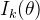
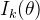
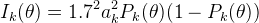
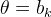

| テスト理論 |
| テスト理論 |
項目反応理論では、ある項目を回答者に提示することによって、その正誤からその回答者の能力値についてどれくらい確かな情報を得られるかを、項目情報量として評価する。
ここで、2パラメータロジスティックモデルでは、項目 の項目情報量を以下のように定義する。
の項目情報量を以下のように定義する。
|  | (107) |
これが能力値 の関数であることは重要な特徴である。 つまり、どの項目を回答者に提示すると最も豊かな情報を得られるかは、その回答者の能力値のレベルによって異なるということである。
の関数であることは重要な特徴である。 つまり、どの項目を回答者に提示すると最も豊かな情報を得られるかは、その回答者の能力値のレベルによって異なるということである。
Figure 9 は、横軸に能力値、縦軸にそれに対応する Figure 7 の3項目の項目情報量を描いたものである。
このように項目情報量は1つの山を持ち、において最大値を取る。 つまり、正答できるかどうかが五分五分になるような困難度の項目を提示した場合が、正誤から能力値について得られる情報量が最も多いということである。
つまり、その回答者に取って難しすぎる項目を提示すれば誤答することがわかりきっているし、易しすぎる項目を提示しても正答することがわかりきっていることから、回答者の能力値を細かく査定するのには役に立たないということである。
また、項目2は項目1や項目3に比べて情報量の曲線が滑らかで、最大値が低い。 これは、項目2の識別力が低いためである。 すなわち、識別力の高い項目ほど、その項目への正誤から能力値に関してたくさんの情報を得られるということである。
とはいえ、識別力は高ければ高いほど常によいというものではない。 識別力の極めて高い項目は、項目情報量が高い値を取るの区間がとても狭く、多様な能力値に対応させるには向かない。 識別力のある程度低い項目は、の広い範囲において一定の情報量を持つため、回答者の能力値のレベルが全く不明なときに、それをある程度絞り込もうとする段階で利用するのに向いている。1
このように、項目反応理論にもとづけば、どのような能力レベルの回答者にどういった問題を提示するのが有用か、明確な指標を利用して判断することができる。 これが、古典的テスト理論など正答数得点にもとづくテストの運用と最も大きく異なる点である。
Footnotes
| テスト理論 |